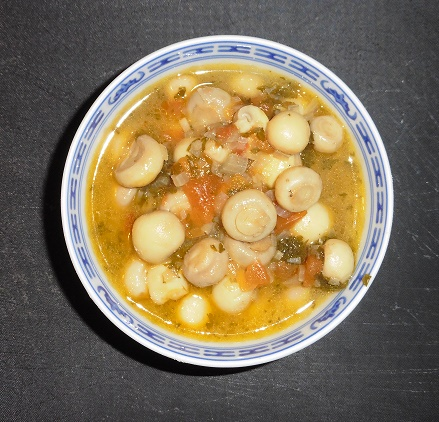

Champignons à la grecque
Cette délicieuse recette est de Paul Bocuse
Ingrédients pour 4 personnes
- 600 g de champignons de Paris
- Sel marin
- Poivre noir du moulin
- Le jus d'un citron
- 1/4 l de vin blanc
- Un peu de thym
- 1 petite feuille de laurier
- 10 grains de coriandre
- 1 grosse tomate
- 1 tasse de persil haché
- 1 tasse d'huile d'olive
- 1 gros oignon
Préparation

- Mettez dans une terrine les champignons nettoyés avec le sel, le poivre et le jus de citron.
- Ajouter le vin blanc, le thym, le laurier, la coriandre, la tomate pelée épépinée et concassée, puis le persil. Mélangez, laissez reposer un peu.
- Chauffez fortement l'huile dans une poêle, faites y revenir l'oignon débité en petits dés sans lui laisser prendre couleur.
- Ajoutez les autres ingrédients, couvrez la poêle et laissez cuire 5 minutes à gros bouillons.
- Transvasez dans un autre récipient pour arrêter la cuisson. Servez tiède ou placez le récipient au réfrigérateur pour le lendemain.